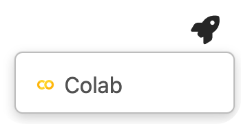

授業の概要#
Pythonは世界中でよく使われているプログラミング言語です。特に、科学計算とデータ分析のコミュニティの発展に伴う、Pythonはデータサイエンス、機械学習などの領域において、最も重要な言語の一つと変わっていきました。
この授業は、プログラミング言語Pythonを用いて計算社会科学的なデータ操作・処理・分析用プログラムを書くための基本的な技術を習得することを目的とします。その以外、プログラミングとデータ分析のために必要な知識と技術も学びます。
授業の内容#
Python#
Pythonはデータ解析・機械学習のためのライブラリが充実しており、データ解析や機械学習の分野で最もよく使われている言語である。
NumPy#
NumPyは、プログラミング言語Pythonにおいて数値計算を効率的に行うための拡張モジュールである。効率的な数値計算を行うための型付きの多次元配列（numpy.ndarray）のサポートをPythonに加えるとともに、それらを操作するための大規模な高水準の数学関数ライブラリを提供する。
pandas#
pandasとは、データ解析を容易にする機能を提供するPythonのデータ解析ライブラリです。 Pandasの特徴は、データ操作のための高速で効率的なデータフレーム (DataFrame) という高いレベルのデータ構造データを提供しています。構造化されるデータ形式で、データの調整や変形など様々な処理が可能です。
matplotlib#
matplotlibは、グラフ描画ライブラリである。オブジェクト指向のAPIを提供しており、様々な種類のグラフを描画する能力を持つ。Pythonで使える可視化ためのライブライは他にもありますが、Matplotlibは最も広く使われているため、他のライブライとうまく連携しやすくなっています。
scikit-learn#
scikit-learnは機械学習ライブラリである。教師あり学習、教師なし学習に関するアルゴリズム(SVM、Random Forest、回帰、クラスタリングなど)の効率的な実装を提供しています。
学習の到達目標#
データ構造、制御構造、オブジェクト指向などプログラミング言語の基礎概念について学ぶとともに、ある程度自由にPythonを用いて計算やデータ処理を実装できるようになることを目指す
データ処理とデータ分析に必要なPythonライブラリの使い方を習得することを目指す
Python環境の構築、パッケージ管理、コード管理に関する知識を習得し、Pythonを用いて再生可能なデータ解析を行えるようにことを目指す
GitとGitHub#
Gitは「パージョン管理システム(Version Control System)」と呼ばれるものの一つです。
パージョン管理システムとは、一つのファイル、または複数のファイルの集合に対して、時間とともに加えられた変更を記録するシステムで、後から特定のバージョンを呼び出すことができるようにするためのものです。
ファイルの「パージョン(変更履歴)」を記録して、いつでも過去の状況に戻したり、過去の変更履歴を比較したり、またはどのタイミングで問題が起こっていたかを確認したり、様々なことができるプログラム開発やファイル管理を補助するシステムです。
GitHubなどのリモートリポジトリと組み合わせることで、クラウドでデータと進捗を管理したり、他のメンバーとコードと情報を共有したり、個人のプロジェクトだけでなく、共同開発するときも強力なツールとなります。

学習の到達目標#
Gitを用いてプロジェクトを管理するスキルを把握するを目指す
GitHubを用いて共同作業を進めるスキルを把握することを目指す
授業設計と成績評価#
授業中実践的なプログラミング操作が多いので、必ずPCをご持参ください。また、インターネットとの接続が必要される操作もありますので、PCのインターネット接続も事前に設定してください。
授業後課題提出を求める場合があります。基本的には授業の理解度を確認するためのプログラミング課題と想定しています。
グループワークの形で実践的なデータ解析プロジェクトに取り組んで、最終の授業で発表します。
基本的にはpythonを使ってくだい。
グループワークの管理はGitとGitHubを使ってください。
グループ内の責任分担は自由ですが、全てのメンバーが一部のプログラミング作業を分担することが望ましい。
これからの授業で説明しますが、GitとGitHubによるプロジェクトを管理すると、各メンバーの作業履歴を確認できますので、グループ全体の成果だけでなく、各メンバーの貢献度も加味して成績を評価します。
成績評価の分配は以下の通りです
出席: \(30\%\)
授業後の課題: \(30\%\)
グループワーク: \(40\%\)
授業の内容に関して不明点あるいはご要望があれば、随時メールでご連絡ください。また、プログラミングや操作の質問については、Google ClassroomまたはGitHub Issueでも受け付けます。
授業のオフィスアワーは、できれば二日前アポイントを取ってくだい。
授業の資料#
この授業の資料は、Jupyter Notebook形式で作成されたソースファイルをJupyter Bookを用いて変換することで作成されたコンテンツになっている。
授業の資料はこちらのリンクで閲覧できます。
.ipynb形式のソースファイルの管理と共有には、GitHubと呼ばれる環境を利用していて、ソースファイルはこちらからも閲覧できる。Google Colaboratoryというサービスを利用してGoogleのクラウド環境上でJupyter Nootebookを編集・実行することができます (手持ちのPCの動作に不安がある方は、Google Colaboratoryを利用してください)。
Note
Google Colaboratory上でノートブックを開くには、ロケットの形をしたボタンにマウスオーバーして”Colab”から開く。
